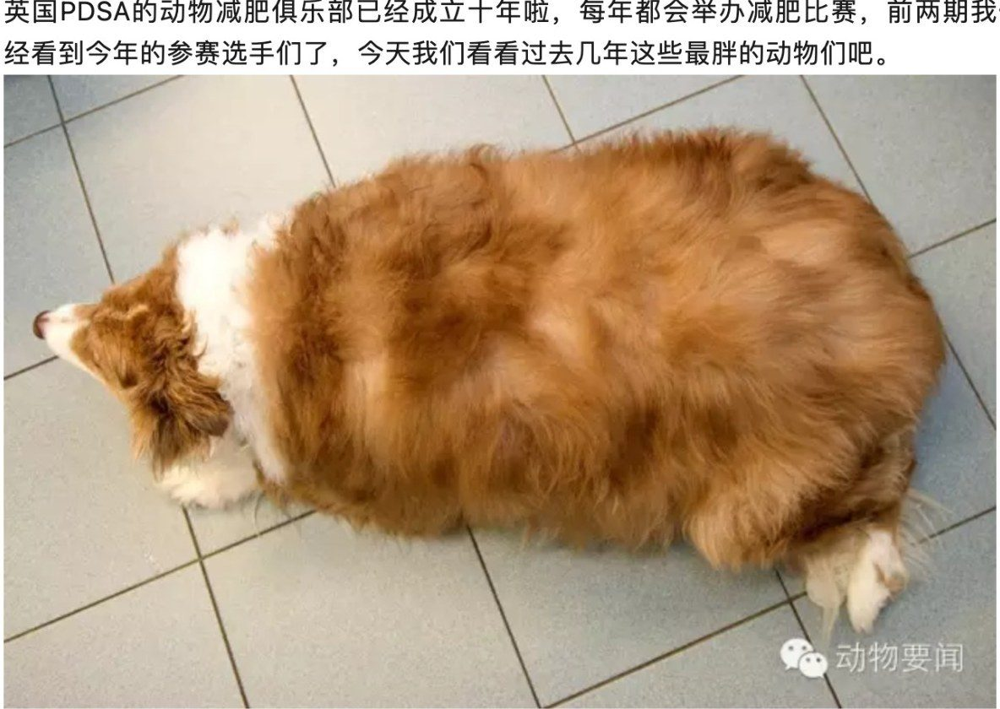
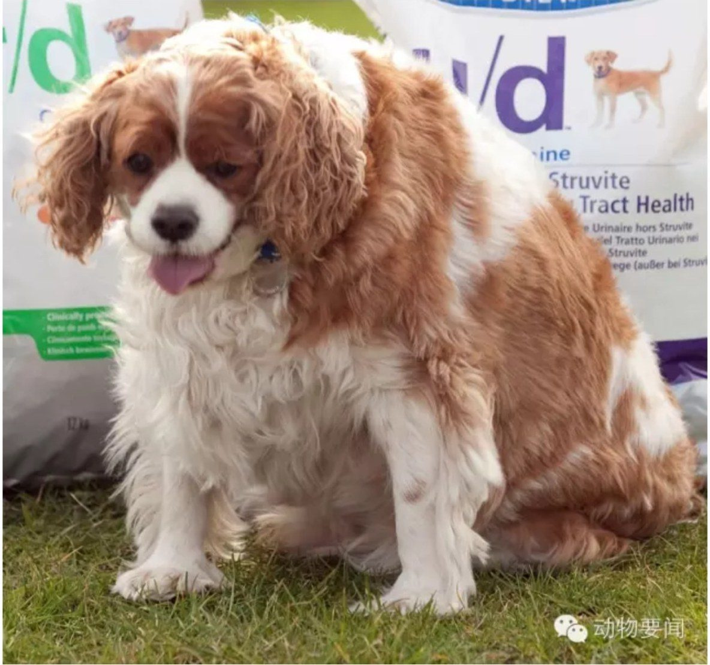
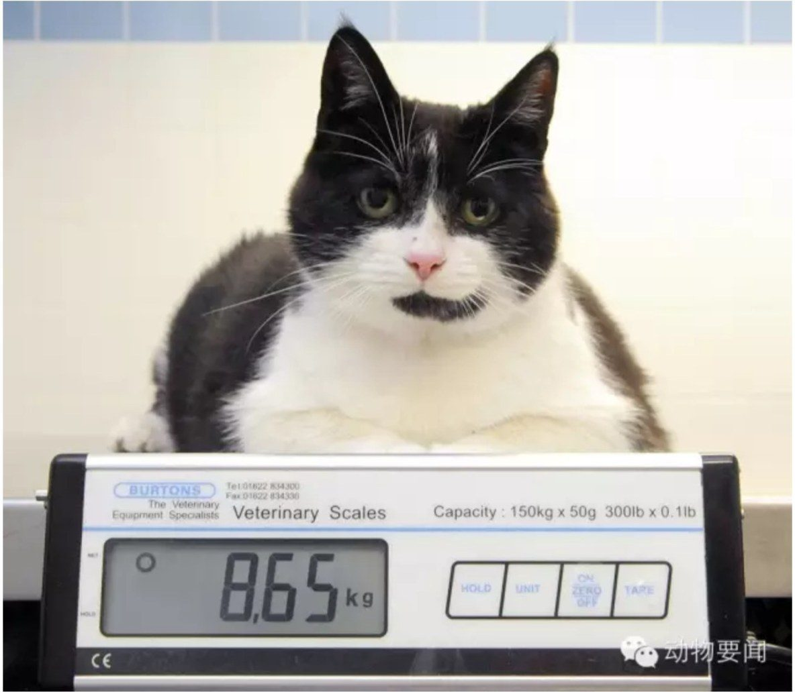
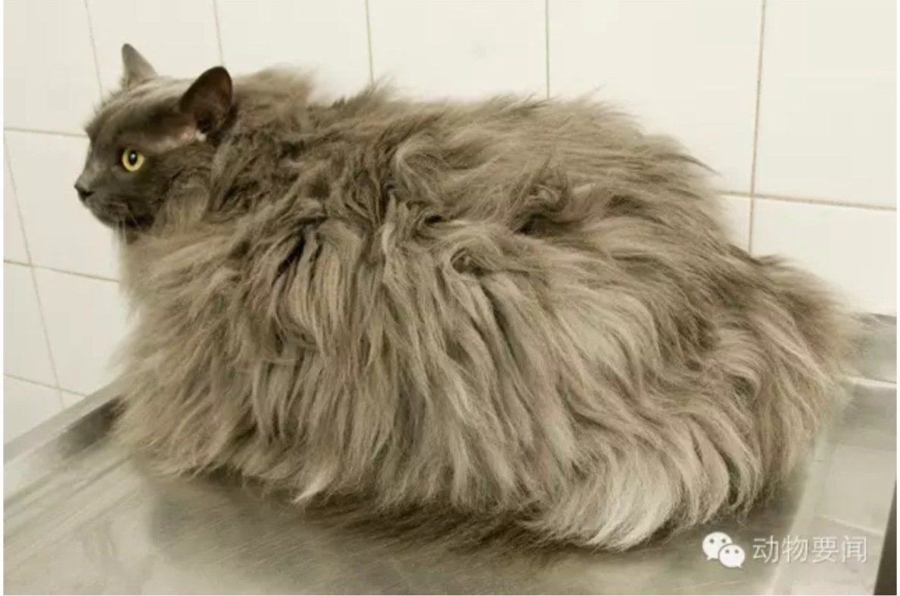

Merlin
爱吃饼干，2012年加入减肥俱乐部时42.2公斤。通过努力，现在腰围已经小了20公分了耶！
PDSA的动物减肥俱乐部成立十年了。看完今年的参赛选手，再来看看过去几年这些最胖的动物们。
爱吃饼干，2012年加入减肥俱乐部时42.2公斤。通过努力，现在腰围已经小了20公分了耶！
小时候挨过饿，被解救出来后开始猛吃：每天在家吃完再去邻居家吃，然后回到花园里把主人喂鸟的也吃掉。。。开始减肥后，爱美的Fifi好像斩断了食欲，据说已经变回精致漂亮的猫咪了呢！
这只查尔斯王小猎犬过胖啦！被新主人领养时连走路都费劲，现在已经减掉十几斤，终于变回能跑能跳的小猎犬了。
以前视线范围里能吃的都会吃掉，黄油、奶酪、膨化食品，很快变得有自己两倍大！加入俱乐部后效果很棒，比赛期间减了1.55公斤、13厘米腰围，现在经常在花园里跑跑跳跳。
以前挺瘦的，据说还喜欢在水池里玩，后来变懒了。2013年加入俱乐部，比赛期间减了4.2公斤，腰围减了10厘米呢。
从小就比家里其他猫吃得多，胃口好，总是吃不饱。开始减肥后很快减了2公斤，后来一路健康下来了。
从小饿着过，流浪时被救之后胃口大开，一有机会就“偷”一切能吃的。加入俱乐部时8.6公斤，后来当然好转啦。
长得像史莱克里穿靴子的猫，在家没事老围着奶酪和洋葱圈打转。越来越胖之后也不那么爱干净了，懒惰极了！主人下决心让它减肥。它是2014年减肥竞赛的冠军呢！
大胖猫Cookie可厉害了，除了特别爱吃金枪鱼，还去邻居家偷鸡吃！它不是小猫啦，很快就变得非常笨重。减肥以来成绩一般，几个月只减了1公斤。
平时吃不饱就会一直一直一直叫，主人实在受不了只好老给吃的，最后终于太胖啦。现在据说瘦下来了，不知道少吃还会不会喵喵叫不停。



